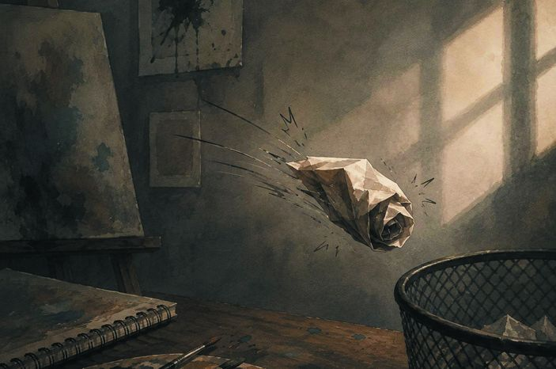

الإنسانُ قاصٌّ بطبعِه
قبلَ أيِّ تعريف… جرِّبْ أن تحكي.
احكِ لزميلِك في نصفِ دقيقةٍ موقفاً طريفاً أو مؤثّراً حدثَ لك هذا الأسبوع… ثمّ استمعْ إلى حكايتِه. لماذا حكيتَه؟
نَردُ الحكاية
أربعةُ أحجارٍ تصنعُ بدايةَ قصّة. ارمِها… ثمّ ليبدأْ أحدُكم الحكايةَ شفهيّاً.
ابدأْ قصّةً بهذه العناصرِ الأربعة في دقيقةٍ واحدة. ما الذي اضطُررتَ أن تقرّرَه غيرَها؟
القصّةُ القصيرة
من واقعِ الحياةِ إلى الخرافة — انقروا محطّاتِ المقياس.
أنواعُ القصّةِ القصيرة
نوعان… أيُّهما يستطيعُ كلُّ واحدٍ منكم أن يكتبَه؟ خمّنوا، ثمّ اقلبوا البطاقتَين.
— فنُّ كتابةِ القصّة، حسن يوسف الكموشي
إذا كانت القصّةُ العامّةُ تحتاجُ «دراسةَ أصولِها وقواعدِها»… فماذا سنفعلُ في هذا الدرس؟
لعبة ١: واقعيّةٌ أم خياليّة؟
انقرْ فكرةَ القصّةِ ثمّ صندوقَها. ليدافعْ كلُّ فريقٍ عن اختيارِه قبلَ «تحقّق».
فرّازُ الحكايات
الواقعيّةُ حدثتْ بالفعلِ أو ممكنٌ أن تحدث، والخياليّةُ لم تحدثْ في الواقع.
عناصرُ بناءِ القصّة
تسعُ بطاقاتٍ مقلوبة. عدِّدوا العناصرَ أوّلاً، ثمّ نكشفُ ما أصبتم.
ماذا يحتاجُ الكاتبُ ليبنيَ قصّة؟ عدِّدوا أكبرَ عددٍ من العناصر.
الإطار: المكانُ والزمان
غيّروا الزمانَ والمكان… وراقبوا كيف يتغيّرُ إحساسُ المشهد.
أيُّ تركيبٍ يناسبُ قصّةً حزينة؟ وأيُّها يناسبُ بدايةً جديدة؟ ولماذا؟
الفكرةُ… والأحداثُ الشائقة
صوِّتوا: أيُّ الحدثَين يجعلُك تكملُ القراءة؟ انقروا الخيارَ لعدِّ الأصوات.
⚡ الأحداث: تحتوي القصّةُ على عدّةِ أحداثٍ تدورُ حولَها، وينبغي أن تكونَ شائقةً تجذبُ القارئ.
الشخصيّات: رئيسةٌ وثانويّة
للقصّةِ عددٌ من الشخصيّات: بعضُها أساسيٌّ والآخرُ ثانويّ، ويصفُها القاصُّ من الخارجِ والداخل.
👁 من الخارج
ما نراه: الشكلُ والحركةُ والأفعال.
❤ من الداخل
ما يشعرُ به ويفكّرُ فيه.
لعبة ٢: من الخارجِ أم من الداخل؟
وصفٌ نراه… أم شعورٌ نحسُّه؟ انقرِ العبارةَ ثمّ صندوقَها.
عينُ القاصّ
الحوار… ومن يحكي؟
المشهدُ نفسُه بثلاثةِ رواة. بدِّلوا الراويَ وراقبوا الكلماتِ المضيئة.
🎙 حكايةُ القصّة: سردُ القصّةِ يكونُ بلسانِ إحدى شخصيّاتِها، أو أن يسردَها شخصٌ من خارجِها.
أيُّ راوٍ يُدخلُنا إلى مشاعرِ خالدٍ أكثر؟ وأيُّهم يرى ما لا يراه خالد؟
مخطّطُ بناءِ القصّة
للقصّةِ بدايةٌ ووسطٌ ونهاية… ولها أيضاً مقدّمةٌ وعقدةٌ وحلّ.
البداية(التقديم)
- تعريفٌ بالشخصيّاتِ الرئيسة.
- رسمُ الإطارِ الزمانيِّ والمكانيّ.
- الجملةُ الافتتاحيّةُ الجاذبة.
الوسط(التطوّرُ والعقدة)
- تصاعدُ الحدثِ المركزيّ.
- ظهورُ الصراع (داخليّ – خارجيّ).
- الذروة (أعلى نقطةِ التوتّر).
النهاية(الحلُّ والخاتمة)
- انفراجُ الصراعِ أو تعقيدُه.
- رسالةُ القصّةِ أو أثرُها.
- نهايةٌ مفتوحةٌ أو مغلقة.
جبلُ الحبكة
الحبكة: سلسلةٌ من الأحداثِ المترابطةِ المؤدّيةِ إلى الذروةِ فالحلّ. انقروا المحطّاتِ بالترتيب.
لماذا تأتي الذروةُ قربَ النهايةِ لا في أوّلِ القصّة؟
لعبة ٣: فرّازُ المخطّط
أين مكانُ كلِّ بطاقة: في البداية، أم الوسط، أم النهاية؟
ابنِ القصّة
بابانِ للنهاية
انقروا كلَّ باب… أيُّهما يُغلَقُ على القارئ؟ وأيُّهما يتركُه يتأمّل؟
النهايةُ المغلقة
تحسمُ الأحداثَ وتقدّمُ نتيجةً واضحةً وحاسمة.
- لا تتركُ مجالاً للتأويلِ أو التساؤل.
- القارئُ يعرفُ تماماً ما حدثَ للشخصيّات.
النهايةُ المفتوحة
تتركُ القصّةَ معلّقةً أو غامضة، وتفتحُ المجالَ أمامَ القارئِ للتفكيرِ أو تخيّلِ ما سيحدثُ لاحقاً.
- تثيرُ الفضولَ وتدفعُ القارئَ للتأمّل.
- لا تعطي إجابةً نهائيّة، بل تتركُ احتمالاتٍ متعدّدة.
لعبة ٤: مفتوحةٌ أم مغلقة؟
ثماني نهايات… والوقتُ يجري! احكموا: هل نعرفُ تماماً ما حدث؟
«ورقةٌ مطويّة»
قبلَ القراءة: صورةٌ وعنوان… فماذا تتوقّعون؟

- ماذا كُتبَ في الورقة؟
- لماذا يرميها صاحبُها؟
- هل ستصلُ إلى السلّة؟
ورقةٌ مطويّة
كانت الساعةُ تقتربُ من منتصفِ الليل حين صعدَ خالد إلى سطحِ المنزل، وفي يدِه ورقةٌ مطويّةٌ كثيراً، كأنّها تعبتْ من كثرةِ ما فُتحتْ وأُغلقتْ. جلسَ قربَ الحائطِ القصير، ينظرُ إلى أضواءِ المدينةِ وهي تتلألأُ من بعيد، ويستمعُ إلى صوتِ الريحِ وهي تمرُّ خفيفةً بين الأشياء.
فتحَ الورقة، وقرأَ السطورَ التي كتبَها ثمّ شطبَها مراراً. لم تكنْ رسالةَ وداع، بل كانت محاولةً مرتبكةً ليقولَ ما عجزَ عن قولِه في النهار: إنّه أخفقَ في مسابقةِ الرسمِ المدرسيّة، وإنّ زملاءَه ضحكوا حين عرضَ لوحتَه، وإنّه شعرَ للحظةٍ أنّ موهبتَه الصغيرةَ لا تستحقُّ أن يراها أحد.
كان يفكّرُ أن يمزّقَ الورقةَ وينسى الأمر، لكنّ صوتاً هادئاً جاءَ من خلفِه:
– عرفتُ أنّكَ هنا.
ما الصراعُ الذي يعيشُه خالد؟ أهو صراعٌ داخليٌّ أم خارجيّ؟ ومن صاحبُ الصوت؟
التفتَ، فإذا أختُه الصغيرةُ ريم تحملُ كوبَين من الشاي، وتقتربُ منه بابتسامةٍ لا تسألُ كثيراً. ناولتْه الكوبَ وجلستْ بجانبِه، ثمّ قالت:
– البردُ لا يزعجُ كثيراً حين يكونُ هناك من يجلسُ معك.
ابتسمَ خالدٌ ابتسامةً خفيفة، ثمّ مدَّ إليها الورقة. قرأتْها ريمُ ببطء، ولم تضحكْ، ولم تقلْ له إنّ الأمرَ بسيطٌ كما يفعلُ الكبارُ أحياناً. قالت فقط:
– أتدري؟ اللوحةُ التي لا تُعجبُ الناسَ اليومَ قد تكونُ أوّلَ خطوةٍ في لوحةٍ أجملَ غداً.
نظرَ إليها صامتاً، فأكملت:
– أنتَ لم تفشلْ في الرسم، أنتَ فقط عرفتَ طريقاً لا يناسبُك تماماً. جرّبْ طريقاً آخر، لوناً آخر، فكرةً أخرى. المهمُّ ألّا تُغلقَ النافذةَ التي ترى منها حلمَك.
في تلك اللحظة مرّتِ الريح، فتحرّكتِ الورقةُ بين يدَي خالد، لكنّه لم يتركْها. طواها بعنايةٍ ووضعَها في جيبِه، كأنّه قرّرَ أن يحتفظَ بضعفِه شاهداً على بدايةٍ جديدة، لا نهايةٍ حزينة.
وفي الصباح، قالَ لأختِه ريم إنّه يريدُ أن يبدأَ في تعلّمِ الرسم.
أيُّ جملةٍ قالتْها ريمُ غيّرتْ خالداً؟ ولماذا لم يتركِ الورقةَ للريح؟ وهل صدقتْ توقّعاتُكم؟
تحليلُ القصّة
أجيبوا عن كلِّ بطاقةٍ شفهيّاً قبلَ فتحِها.
لعبة ٥: أهمُّ الأحداثِ بحسبِ تسلسلِها
انقروا الأحداثَ بترتيبِ وقوعِها في القصّة، ثمّ «تحقّق».
سلسلةُ الأحداث
تدريب ١: خمسةُ عناوين
صُغْ مع زملائِك خمسةَ عناوينَ مختلفةٍ مناسبةٍ للقصّةِ السابقة، معبّرةٍ عن مضمونِها.
تدريب ٢: الفكرةُ المحوريّة
استخلصِ الفكرةَ المحوريّةَ للقصّةِ السابقة.
ما الفكرةُ التي تدورُ حولَها القصّةُ كلُّها؟ اكتبْها في جملةٍ واحدة، ثمّ صوِّتوا على الأدقّ.
تدريب ٣: زمانٌ ومكانٌ مختلفان
اخترْ زماناً ومكاناً مختلفين، واكتبْ مشهداً جديداً يعبّرُ عن حالةٍ مغايرةٍ للحدث؛ ليتبيّنَ دورُ الزمانِ والمكانِ في تغييرِ مسارِ الأحداث.
تغيّرَ الزمانُ (الليل ← الظهيرة) والمكانُ (السطح ← قاعة المعرض)، فتغيّرَ المسار: جاءَ الدعمُ من المعلّمِ أمامَ الناس، لا من الأختِ في العزلة.
تدريب ٤: دورُ ريم
لريمَ دورٌ في دعمِ أخيها نفسيّاً.
ماذا فعلتْ ريم؟ وماذا تجنّبتْ أن تفعلَ؟
ب. ماذا يمثّلُ هذا الدعمُ من عناصرِ القصّة؟
تدريب ٥: مفتوحةٌ أم مغلقة؟
هل جاءتْ نهايةُ القصّةِ مفتوحةً أو مغلقة؟ وما أثرُ ذلك في القارئ؟
قد يقولُ بعضُكم: «لكنّنا لا نعرفُ هل سينجحُ في الرسم!» — هل يجعلُها ذلك مفتوحة؟
تدريب ٦: نهايةٌ مفتوحة
غيّرْ نهايةَ القصّةِ لتكونَ مفتوحة، بحيث تنتهي الأحداثُ بأكثرَ من حلٍّ محتمل، واكتبْها بأسلوبِك.
قواعدُ الكتابةِ الصحيحة
ستُّ قواعدَ نأخذُها من «ورقةٌ مطويّة» نفسِها.
كانت الساعةُ تقتربُ من منتصفِ الليل حين صعدَ خالدٌ إلى سطحِ المنزل
ثمّ مدَّ إليها الورقة… في تلك اللحظة مرّتِ الريح… وفي الصباح
ثمّ قالت:
– البردُ لا يزعجُ كثيراً حين يكونُ هناك من يجلسُ معك.
ابتسمَ خالدٌ ابتسامةً خفيفة / شعرَ للحظةٍ أنّ موهبتَه لا تستحقُّ…
كان يفكّرُ أن يمزّقَ الورقة… ← طواها بعنايةٍ ووضعَها في جيبِه
قالَ لأختِه ريم إنّه يريدُ أن يبدأَ في تعلّمِ الرسم.
طبيبُ القصّة
فقرةٌ مريضةٌ فيها ستُّ علل. انقروا كلَّ موضعٍ مريضٍ لتشخيصِه وعلاجِه.
بعدَ العلاج
قبلَ أذانِ المغربِ بدقائق، خرجَ سالمٌ — وحقيبتُه المدرسيّةُ ما تزالُ على ظهرِه — إلى سوقِ السمكِ القديم. بحثَ عن أبيه بين الباعةِ فلم يجدْه، وفجأةً رأى قاربَه الصغيرَ مربوطاً إلى الرصيفِ وحدَه. وحين عادَ إلى البيتِ مُتعَباً، قالت أمُّه:
– لماذا تأخّرتَ يا سالم؟
فابتسمَ، وأخرجَ من جيبِه رسالةً مبلّلةً بخطِّ أبيه.
قبلَ أن تعيدَ الكتابة: اتّبعِ الخطوات
كما في الكتاب — خطوةً خطوة.
لوحةٌ أجملُ غداً نموذجٌ لإعادةِ كتابةِ القصّةِ بأسلوبٍ آخر — الفكرةُ نفسُها، والشخصيّاتُ والإطارُ جديدة، والنهايةُ مغلقة
حين دقّتِ الساعةُ الحاديةَ عشرةَ ليلاً، كانت غرفةُ سارة غارقةً في ضوءِ مصباحٍ صغير، وعلى مكتبِها لوحةٌ ملفوفةٌ بشريطٍ أزرق. لم تفتحْها منذُ عادتْ من المعرض؛ فقد علّقتْها لجنةُ التحكيمِ في الزاويةِ الأخيرة، ومرَّ بها الزائرون دونَ أن يتوقّفوا.
أمسكتِ المقصَّ، وقرّبتْه من الشريط… ثمّ توقّفت. في تلك اللحظة طرقَ جدُّها البابَ، ودخلَ يحملُ فنجانَ قهوةٍ وابتسامةً هادئة. جلسَ على طرفِ السرير، وقال:
– أتعرفين يا سارة؟ أوّلُ بيتٍ بنيتُه في شبابي سقطَ جدارُه بعدَ أسبوع.
رفعتْ رأسَها مستغربةً، فأكمل:
– لم أهدمِ البيت… بنيتُ الجدارَ من جديد، وما زلنا نسكنُه حتى اليوم.
ضحكتْ سارةُ لأوّلِ مرّةٍ منذُ أيّام، وفكّتِ الشريط، وعلّقتِ اللوحةَ على جدارِ غرفتِها، وكتبتْ تحتَها بخطٍّ صغير: «البدايةُ الأولى». وفي الصباح، سجّلتِ اسمَها في نادي الرسمِ المدرسيّ.
ما الذي تغيّرَ عن «ورقةٌ مطويّة»؟ وما الذي بقيَ كما هو؟ شغِّلوا العدساتِ لتتأكّدوا من العناصر.
استوديو الكتابة — التقويم
أعدْ كتابةَ القصّةِ مرّةً أخرى بأسلوبِك، مع الحفاظِ على فكرتِها الأساسيّة، واخترْ نهايةً (مغلقة / مفتوحة).
الخلاصة
ليقلْها طالبٌ بلسانِه قبلَ كشفِها.